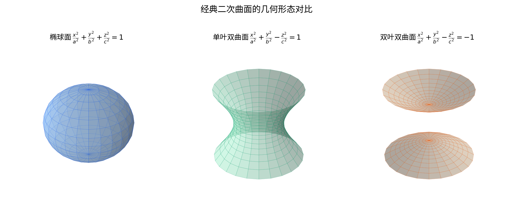
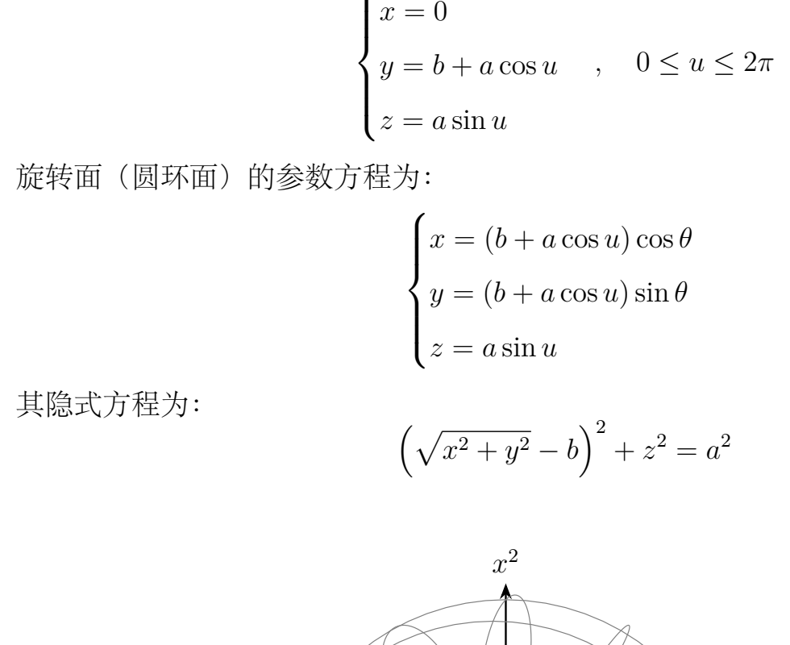

本节是上节课”柱面、锥面”的后续：上次介绍了柱面（曲线沿一条直线平行移动生成）和锥面（曲线绕一点伸缩生成），这次引入第三种由曲线生成曲面的方式——旋转面。下面讲旋转面的定义、一般方程的求法，以及转轴为坐标轴时的快捷规律，并由此认识一批二次曲面。
给定一条固定的直线 ，再给定一条曲线 。让曲线 绕着直线 旋转一周，扫出来的图形就是一张旋转面。
[按图还原] 已知：一条直线 （轴），以及轴外一侧的一条曲线 （母线）。作法：让 绕 旋转一周扫出曲面。连/作：过 上任一点作垂直于 的平面，截得一个圆（纬线）；作过 的半平面，截得一条曲线（经线）。图中不另添别的点线。
几个特殊情形（老师逐一举例）：
下面推导旋转面的一般方程。思路是：在旋转面上任取一点，把它和母线上的对应点用”同一纬圆”联系起来，再用平面与球面把这个圆表示出来，最后消去参变量。
命题／任务：设旋转轴 过点 ，方向向量为 ，即
思路：在旋转面上任取一点 。过 的纬圆与母线交于一点 。 与 落在同一个圆上，而这个圆可以看成”过点 且垂直于轴的平面”与”以轴上一点 为球心、半径等于 的球面”的交线。由此得到含 的四个方程，消去这三个参变量即得关于 的曲面方程。
逐步推导（课上老师口述了四个方程与”消去 “这一步，以下把推导过程按学科方式写清；四方程本身为课堂所讲，最后一步消元为一般结论）： 1. 在母线 上，故
结论：旋转面的一般求法是——任取面上点 ，由”纬圆 = 垂直轴的平面 ∩ 以轴上点为球心的球面”列出四个方程，消去母线上的对应点坐标 即得 [补全：具体消元结果随 与轴而变，课堂未写出统一显式公式，仅给出方法]。
老师点出的意义与易错点：这是求旋转面”一般的方式和方式”。关键要抓住”同一个纬圆”：面上的点 和母线上的点 同圆，所以既满足那个垂直平面、又满足那个以轴上点为球心的球面。
先把上面的方法落到一道最典型的题上：一条直线绕另一条固定的直线旋转一周，求所得曲面的方程。
命题：设母线是一条直线，按老师给出的参数式取为
思路：沿用证明 1 的框架。由于轴过原点，球面取球心为原点；垂直平面取法向量 、过母线上的对应点 。把直线的参数式代入，得到关于 与 的两个关系，消去 即得曲面方程。
逐步推导（课上老师算到 “2x+y−2z = 2x1+y1−z1” 一类的垂直平面、以及球面 ，并示意”把 代进去就全消掉了”；以下把代换与消元写清，最后的显式多项式为 [补全]）： 1. 球面（球心 ，半径 ）：
结论：旋转面方程为
老师点出的意义与易错点：老师强调”这完全是一个非常简单的事情”。他还顺带提醒：前几天翻全国大学生数学竞赛的赛题，有一年就考了”任意一条直线绕另一条直线旋转求曲面方程”，把上面的方法一套就是答案，“完全是送分题”。——这是课程相关的数学思维提醒，保留。
一般情形要列四个方程、消三个参变量，比较繁。如果旋转轴正好是某条坐标轴，规律会非常简洁。
命题：设旋转轴是 轴，母线是 平面上的一条曲线，方程写作
思路：任取面上一点 。过 的纬圆（垂直于 轴）与母线交于 。 与 同高（），且到 轴距离相等（）。把 用 替换、保留 ，再代回 即可。
[按图还原] 已知： 轴为旋转轴，母线是 平面内的一条曲线。作法：取面上点 ，作过 且垂直于 轴的平面，截母线于 ；得到的关系： 且 。图上不另添点线。
逐步推导（课上老师完整口述了这一步）： 1. 在母线上：，且 。 2. 纬圆所在平面垂直于 轴且过 ，故就是平面 ；同时该圆以 轴为中心、半径为 ，于是
结论：绕坐标轴旋转的通则是——沿轴的坐标保持不变，另外两个坐标整体替换成 。具体： - 绕 轴： 不变，； - 绕 轴： 不变，； - 绕 轴： 不变，。
老师点出的意义与易错点：掌握了这个替换规则，后面所有圆锥曲线绕坐标轴旋转的方程都可以”照规则写”，不必每次重新推导。
把上面的替换规则直接用到三条圆锥曲线上。
命题：椭圆
思路：绕哪个轴，哪个坐标不变，另一坐标连同新出现的垂直坐标合并成平方和。
逐步推导： - 绕 轴： 不变，，得
结论：椭圆绕其长轴或短轴旋转，得到旋转椭球面。
易错点：这条椭圆在 平面内，老师特别指出”绕 轴不现实”——绕 轴旋转只会扫出一个圆（或圆环），不是一张完整曲面，所以只考虑绕 轴或 轴。
命题：双曲线
思路：同样用替换规则。
逐步推导： - 绕 轴： 不变，，得
结论：双曲线绕其实轴或虚轴旋转，得到单叶或双叶旋转双曲面（具体哪一类取决于绕哪条轴，课堂未展开命名）。
命题：抛物线
思路：替换规则照用。
逐步推导： - 绕 轴： 不变，，于是
结论：抛物线绕其对称轴（ 轴）旋转得到”旋转抛物面”的某种四次形式；绕其轴线垂直方向（ 轴）旋转得到标准旋转抛物面 。
再来看一个用参数方程更方便的曲面——圆环面（老师比喻为”汽车轮胎”）。
命题／任务：取一个半径为 的小圆，其圆心到 轴的距离为 （）。让这个小圆绕 轴旋转一周，得到圆环面，写出它的参数方程。
[按图还原] 已知： 轴为旋转轴；在距轴 处有一个半径为 的小圆（圆心在 平面内距原点 处）。作法：小圆绕 轴旋转一周扫出圆环面。图上只画轴、小圆与旋转生成的圆环，不添别的点线。
思路：小圆上一点到 轴的距离（半径）为 ，高度为 ，其中 是绕生成小圆的参数角。再让整个图形绕 轴转过角度 ，即得 。
操作步骤（课上老师完整口述了如下参数式）： 1. 小圆圆心到轴距离为 ，小圆上一点相对圆心的位置用角度 表示：它到轴的额外距离为 ，高度为 。所以该点的”极半径”为 ，高度 。 2. 绕 轴旋转角度 ，把极半径分配到 ：
结论：圆环面的参数方程为
老师点出的意义与易错点：这种”半径 、高度 、再绕轴转 “的结构，与球面的参数表示是同一套路——老师提醒大家回想上次讲过的球面参数表示。
当母线本身就用参数方程给出时，旋转面也可以整体写成参数形式。
命题／任务：设母线 由参数方程给出（以绕 轴为例），写成
思路：旋转时，母线上的点到轴的距离是 ，这个半径在绕轴转动时不变；沿轴的坐标（这里是 ）就是母线的第三个坐标分量；绕轴的角度记为 。
操作步骤（课上老师给出如下形式，并指出与球面参数式一致）： 1. 半径 。 2. 绕 轴转 ，得到
结论：一般母线绕坐标轴旋转，直接用”半径取母线上点到轴的距离、绕轴角度作 、沿轴坐标保留”写出参数方程即可。
老师点出的意义与易错点：球面是旋转面的一个特例 [补全：例如取母线为半圆 绕 轴旋转，即得球面参数式 ，此特例为按学科补全，非当堂逐项推导]。所以”球面参数表示”本质上就是这里这套旋转面参数化。
参数式有时要化回普通（直角坐标）方程。以环面为例。
命题：由构造 7 的环面参数方程
思路：由 先得到 ，从而解出 ；由 得到 ；再利用 消去 。
逐步推导（课上老师完整口述了这一步）： 1. 由 得
结论：圆环面的普通方程为
老师点出的意义与易错点：参数式与普通方程两种写法完全等价，可互相转化。注意方程里出现的是 （到 轴的距离），这正是旋转面”沿轴坐标不变、另一坐标取半径”特征的体现。
最后把旋转面和二次曲面联系起来。回顾二次曲面的一个对称方程
命题：判断上述方程何时是旋转面（旋转椭球面），何时是一般椭球面。
思路：根据”旋转面的方程中有两个变量的系数相等”这一特征来判别。
逐步推导（课上老师口述了如下分类）： 1. 若三个系数全相等（），方程退化为球面 。 2. 若恰有两个系数相等，例如 ，则
结论：二次曲面中，只要有两个变量的系数相同，它就是绕对应轴旋转得到的旋转面；三个系数全同是球面；三个全不同则是一般椭球面。
老师点出的意义与易错点：柱面、锥面、旋转面本是三种”由一条曲线生成曲面”的不同方式——柱面是曲线沿直线平行移动，锥面是曲线绕一点伸缩，旋转面是曲线绕轴旋转。拿到一个对称的方程，先看有几个系数相等，就能判断它是不是旋转面。老师说明：“它有什么性质，我们下次再讲”，本节到此结束。